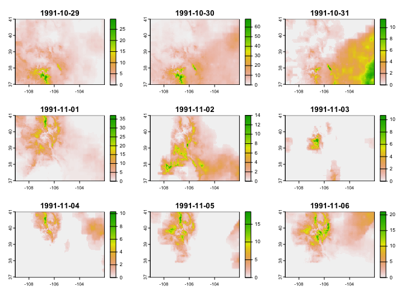
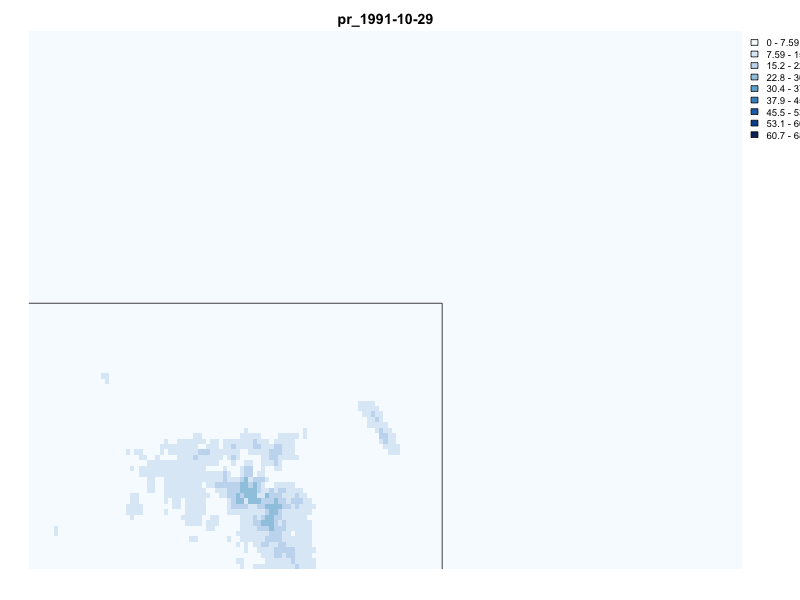
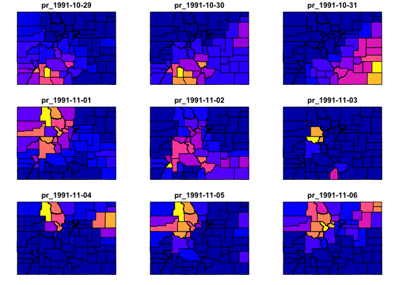
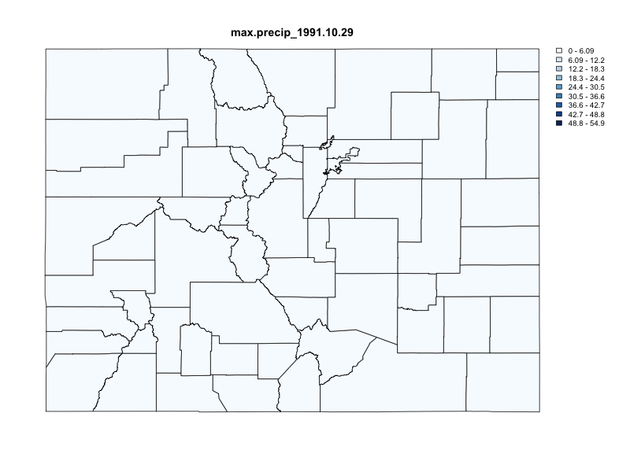

climateR simplifies the steps needed to get climate data into R. At its core it provides three main things:
- A catalog of over 100,000k datasets from over 2,000 data providers/archives. See (
climateR::params)
nrow(params)
#> [1] 107857
length(unique(params$id))
#> [1] 2075
length(unique(params$asset))
#> [1] 4653This catalog is an evolving, federated collection of datasets that can be accessed by the data access utilities.
A general toolkit for accessing remote and local gridded data files bounded by space, time, and variable constraints (
dap,dap_crop,read_dap_file)A set of shortcuts that implement these methods for a core set of selected catalog elements
⚠️ Python Users: Data catalog access is available through the USGS
gdptoolspackage. Directly analogous climateR functionality can be found inclimatePy
Installation
remotes::install_github("mikejohnson51/AOI") # suggested!
remotes::install_github("mikejohnson51/climateR")Basic Usage
Finding rainfall in Colorado between October 29,1991 - November 6, 1991. The source dataset for this example uses the getGridMET shortcut.

system.time({
d = getGridMET(AOI,
varname = "pr",
startDate = "1991-10-29",
endDate = "1991-11-06")
})
#> user system elapsed
#> 0.245 0.054 0.982
Basic Animation
animation(d$precipitation_amount, AOI = AOI, outfile = "man/figures/rast_gif.gif")
Integration with zonal
library(zonal)
system.time({
county = execute_zonal(d, geom = AOI, ID = "fip_code")
})
#> user system elapsed
#> 0.328 0.018 0.366
animation(county, feild_pattern = "pr_", outfile = "man/figures/vect_gif.gif")